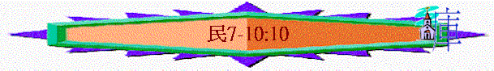

|
超越障礙、邁向豐盛（１－３６） |
|||||||||||||||||
|
預備起行 1-10:10 |
踏上征途10:11-14:45 |
曠野飄流 15-20:13 |
超越障礙 20:14-25:18 | 邁向豐盛 26-36 | |||||||||||||
|
組 織 |
生 活 |
基 礎 |
順 利 |
軟 弱 |
失 敗 |
教 育 |
叛 逆 |
定 例 |
管 教 |
環 境 |
軟 弱 |
咒 詛 |
引 誘 |
組 織 |
軍 令 |
回 顧 |
分 地 |
一.預備起行(在西乃曠野) 1-10:10
3.起行基礎(7-10:10)
＊
重點/特點：(1)不是照6章以後的歷史過程而記載，反倒敘由第二年正月會幕建立的日子----
起行日子的幾件事情
(2)倒敘幾件事情：會幕(7:1)逾越節(9:1)雲彩(9:15)……
(3)中心經文：『……我是耶和華你們的神。』10:10
重點真理：起行的基礎在於神自己，但人也要適當回應
A.會幕----神的同在----人要事奉((7-8)
a.自發的奉獻(7)
(1)為需要而擺上(V1-10)
「摩西立完了帳幕，就把帳幕用膏抹了，使他成聖，又把其中的器具和壇，並壇上的器具，都抹了，使他成聖。當天，以色列的眾首領，就是各族的族長，都來奉獻。他們是各支派的首領，管理那些被數的人。他們把自己的供物送到耶和華面前，就是六輛篷子車和十二隻公牛。每兩個首領奉獻一輛車，每首領奉獻一隻牛。他們把這些都奉到帳幕前。」7:1-3
〜當立完了會幕後，他們自然想起聖所的需要，例如搬運會幕的器皿及牲畜，所以一班帶領自然自發將蓬子車及公牛獻上，作為搬運的需要。
(2)為祭壇而獻上
「用膏抹壇的日子，首領都來行奉獻壇的禮，眾首領就在壇前獻供物。耶和華對摩西說：「眾首領為行奉獻壇的禮，要每天一個首領來獻供物。」7:10-11
『This was the dedecation(奉獻)offering(供物)for
the altar (壇)after it was anointed(膏抹)』v.88b
〜今次獻的主要目的是為「壇」，壇的設立，是為了獻供物給神，當然不可以令它空置，若要常有祭物在壇焚燒，必需用為祭物而切的器具及祭物本身，所以每支派也將關乎獻祭的供物獻上。
特點：
(A)上好的獻上
〜『銀盤子』『銀碗』『金孟』
(B)豐盛的獻上
『盛滿了調油的細麵』『盛滿了香』
(C)全面的獻上
『作素祭』『作燔祭』『作贖罪祭』『作平安祭』
b.持久的燃點
「耶和華曉諭摩西說：「你告訴亞倫說：點燈的時候，七盞燈都要向燈臺前面發光。」亞倫便這樣行。他點燈臺上的燈，使燈向前發光，是照耶和華所吩咐摩西的。這燈臺的做法是用金子錘出來的，連座帶花都是錘出來的。摩西製造燈臺，是照耶和華所指示的樣式。」8:1-4
(1)燈台的作用：讓會幕光亮
(2)祭司的責任：令燈台時常發光
「亞倫在壇上要燒馨香料做的香；每早晨他收拾燈的時候，要燒這香。黃昏點燈的時候，他要在耶和華面前燒這香，作為世世代代常燒的香。」出30:7-8
(3)新約的預表：教會
「論到你所看見、在我右手中的七星和七個金燈臺的奧秘，那七星就是七個教會的使者，七燈臺就是七個教會。」啟1:20
c.聖潔的事奉
「耶和華曉諭摩西說：「你從以色列人中選出利未人來，潔淨他們。潔淨他們當這樣行：用除罪水彈在他們身上，又叫他們用剃頭刀刮全身，洗衣服，潔淨自己。然後叫他們取一隻公牛犢，並同獻的素祭，就是調油的細麵；你要另取一隻公牛犢作贖罪祭。將利未人奉到會幕前，招聚以色列全會眾。將利未人奉到耶和華面前，以色列人要按手在他們頭上。亞倫也將他們奉到耶和華面前，為以色列人當作搖祭，使他們好辦耶和華的事。利未人要按手在那兩隻牛的頭上；你要將一隻作贖罪祭，一隻作燔祭，獻給耶和華，為利未人贖罪。」8:5-12
〜令教會如明亮燈台，照亮整個世界
(1)事奉的起點：分別為聖—刮身、洗衣、獻祭----潔淨自己
當作搖祭----全然給神
(2)事奉的年日：看守聖所
「我從以色列人中將利未人當作賞賜給亞倫和他的兒子，在會幕中辦以色列人的事，又為以色列人贖罪，免得他們挨近聖所，有災殃臨到他們中間。」8:19
(3)事奉的終結：仍要謹守
「到了五十歲要停工退任，不再辦事，只要在會幕裡，和他們的弟兄一同伺候，謹守所吩咐的，不再辦事了。至於所吩咐利未人的，你要這樣向他們行。」8:25-26
〜即使到了退任年紀，仍要與弟兄一同謹守
B.逾越節----神的拯救----人要記念(9:1-14)
a.主動設立
「以色列人出埃及地以後，第二年正月，耶和華在西乃的曠野吩咐摩西說：「以色列人應當在所定的日期守逾越節，就是本月十四日黃昏的時候，你們要在所定的日期守這節，要按這節的律例典章而守。」」9:1-3
出12:13-14
----神免他們遭災殃
出12:17
----神領他們出來 -------> 人要世世代代記念
出12:26-27
----神拯救他們
〜是神主動設立的，是記念神的拯救
b.重覆的提醒
〜不單出埃及題及，民數記也重提
c.嚴勵的執行
(1)要除酵
(2)不守、要治死
「那潔淨而不行路的人若推辭不守逾越節，那人要從民中剪除；因為他在所定的日期不獻耶和華的供物，應該擔當他的罪。」9:13
d.特殊的寬容
「你曉諭以色列人說：你們和你們後代中，若有人因死屍而不潔淨，或在遠方行路，還要向耶和華守逾越節。他們要在二月十四日黃昏的時候，守逾越節。要用無酵餅與苦菜，和逾越節的羊羔同吃。
」9:10-11
〜若遠行或因不潔淨的可以在另外的日子守節，證明神是十分想人記念祂的!
C.雲彩----神的引領----人要順服(9:15-23)
「立起帳幕的那日，有雲彩遮蓋帳幕，就是法櫃的帳幕；從晚上到早晨，雲彩在其上，形狀如火。
常是這樣，雲彩遮蓋帳幕，夜間形狀如火。雲彩幾時從帳幕收上去，以色列人就幾時起行；雲彩在那裡停住，以色列人就在那裡安營。」9:15-17
「有時雲彩在帳幕上幾天，他們就照耶和華的吩咐住營，也照耶和華的吩咐起行。有時從晚上到早晨，有這雲彩在帳幕上；早晨雲彩收上去，他們就起行。有時晝夜雲彩停在帳幕上，收上去的時候，他們就起行。雲彩停留在帳幕上，無論是兩天，是一月，是一年，以色列人就住營不起行；但雲彩收上去，他們就起行。」9:20-22
a.絕對的順服
〜神沒有預先問人，才起雲彩，人只管順服，沒有爭議
b.隨時的順服
〜沒有任何心理預備，雲彩可以停1日，停2日，可以早上，可以在晚上，人要時時準備順服起行。
c.恆久的順服
〜雲彩可以停1日，也可停一年，人要忍耐順服等待神的時刻。
D.吹銀號----神的呼喚----人要知道(10:1-10)
a.曠野的日子----人要順服起行
「你要用銀子做兩枝號，都要錘出來的，用以招聚會眾，並叫眾營起行。吹這號的時候，全會眾要到你那裡，聚集在會幕門口。若單吹一枝，眾首領，就是以色列軍中的統領，要聚集到你那裡。吹出大聲的時候，東邊安的營都要起行。二次吹出大聲的時候，南邊安的營都要起行。他們將起行，必吹出大聲。但招聚會眾的時候，你們要吹號，卻不要吹出大聲。」10:2-7
(1)招聚
不大聲
(A)1枝吹:招聚首領
(B)2枝吹:招聚全會眾
(2)起行
〜大聲
(A)第一次吹：東邊起行
(B)第二次吹：南邊也起行
b.爭戰的日子----人要倚靠神的拯救
「你們在自己的地，與欺壓你們的敵人打仗，就要用號吹出大聲，便在耶和華你們的神面前得蒙紀，也蒙拯救脫離仇敵。」10:9
〜吹大聲時，代表要倚靠神爭戰(當然人可以不吹，並靠自己)
c.歡樂的日子----人要記念我們的神
「在你們快樂的日子和節期，並月朔，獻燔祭和平安祭，也要吹號，這都要在你們的神面前作為紀念。我是耶和華你們的神。」10:10
〜在歡樂的日子要吹號，代表要記念神，不可忘記神的恩與神自己。